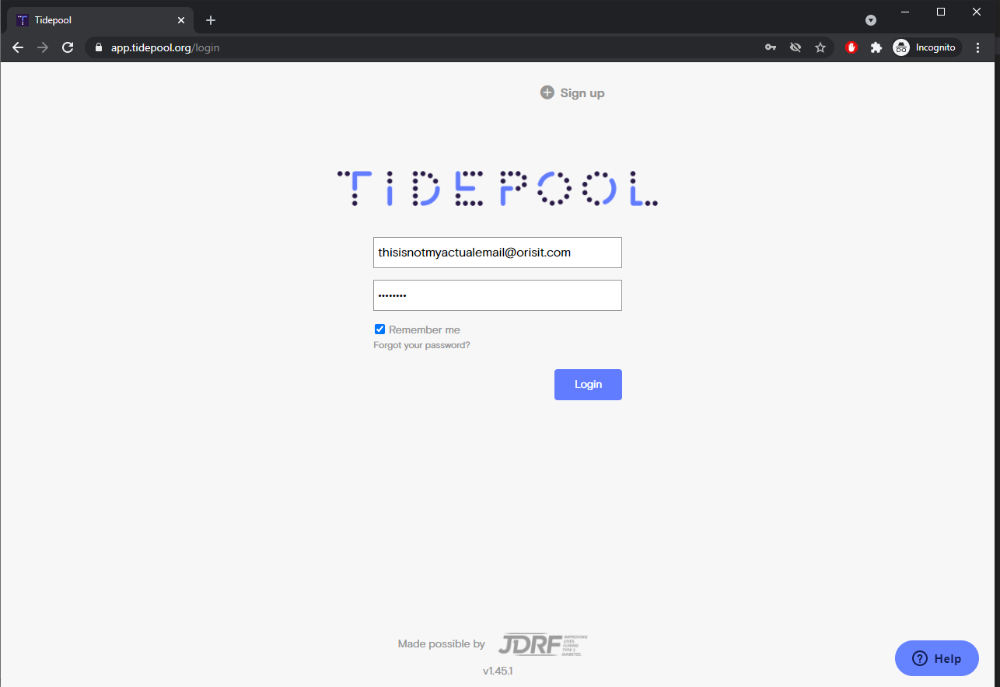
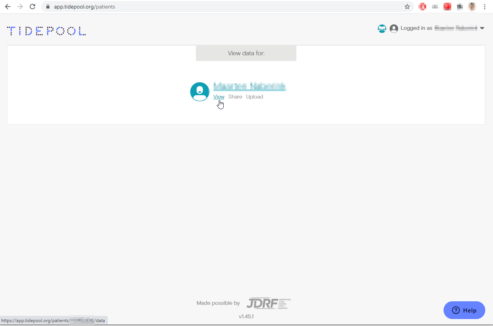
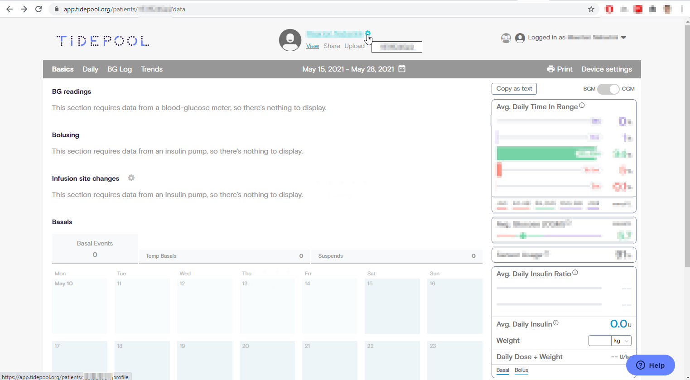
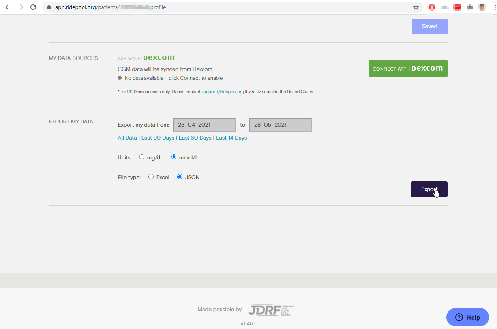
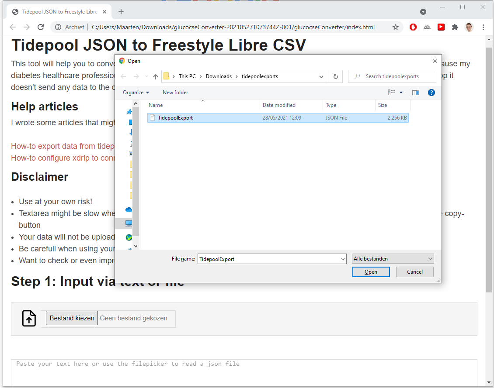
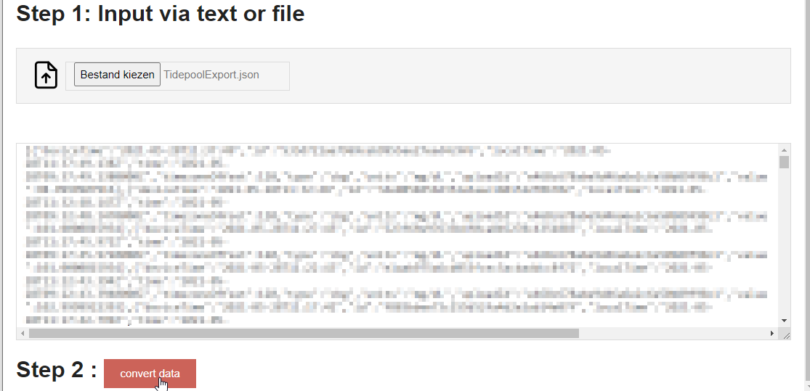
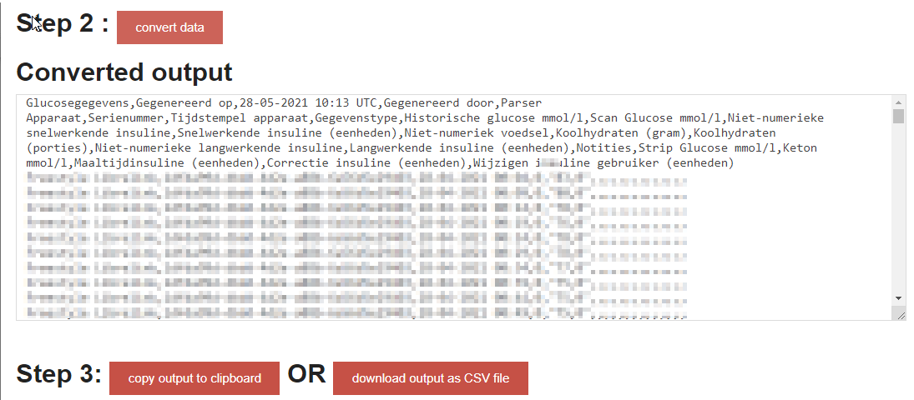

Export data from Tidepool
Step 1 : Go to your Tidepool page, enter your credentials and login
The url is : https://app.tidepool.org/login

Step 2: Click "View"

Step 3: Click the cogwheel to open your profile

Step 4:
Make sure to:
- Select the desired dataset
- The desired type of units (mg/dl or mmol/l
- Filetype MUST be set to JSON
Then click the export button.

Step 5: Select the file we just created in Tidepool

Step 6: Convert the data
The imported JSON data should be displayed in the text area. Click the convert-button to convert this data.

Step 7: Download (recommended) or copy the output to clipboard
